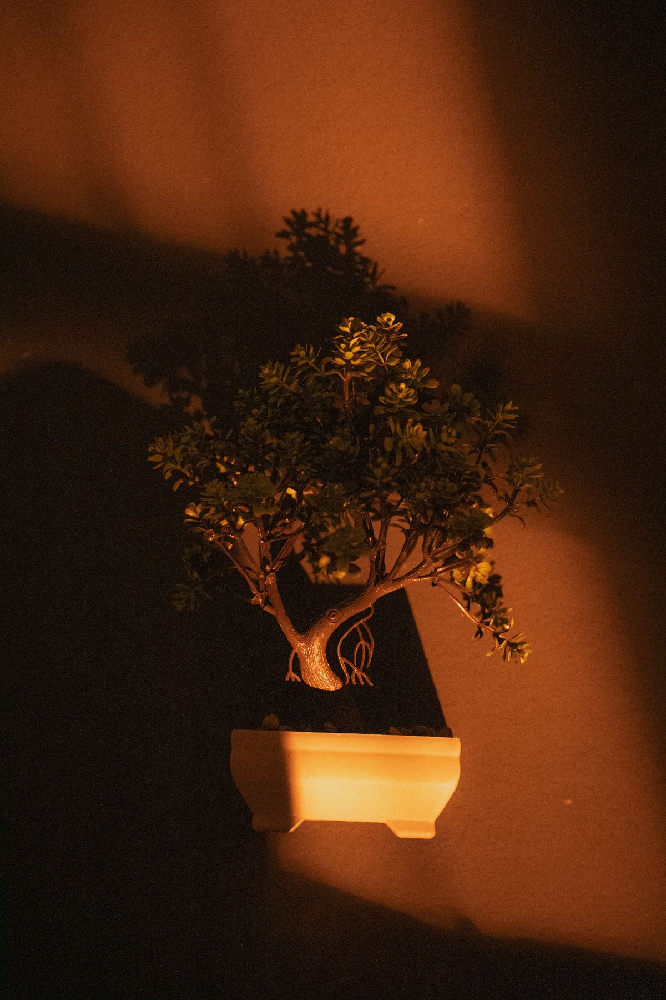
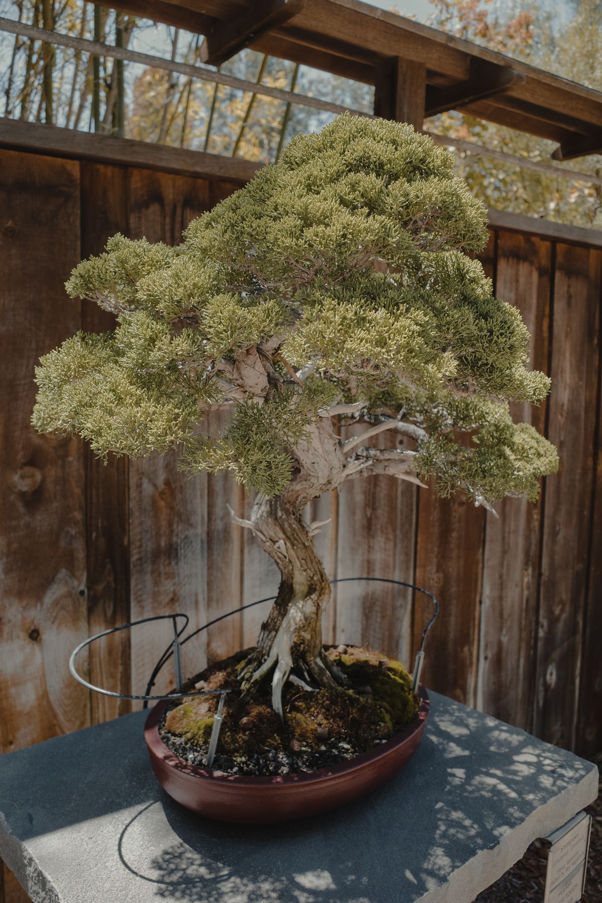
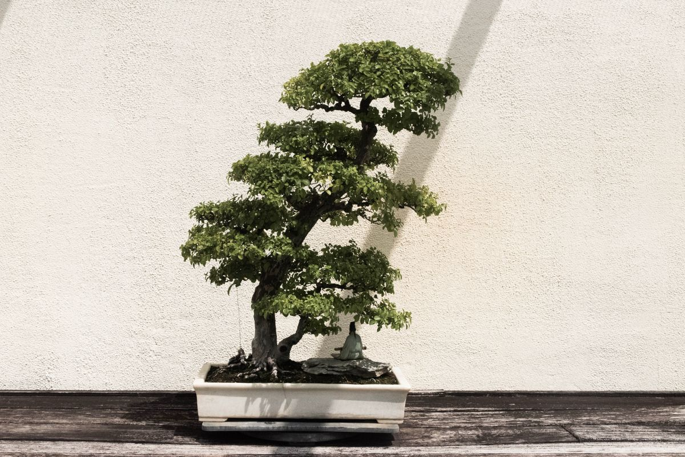

The bench is in Boskoop. Visits by appointment, Thursday to Saturday.
Boskoop · The spring repotting weeks begin 22 February
One bowl. One tree. A field of moss.
I am Maarten Dekker. For twenty-three years I have grown bonsai the shallow way — a single tree in a low bowl, its roots spread over a hand's breadth of soil, the surface finished with living moss. Nothing here is hurried, and nothing is glued.

Japanese maple ‘Seigen’ · 14 years in training · unglazed stoneware bowl, 24 cm · cushion moss, renewed this spring · €1,450 · on the bench now
Every bowl below is finished, mossed and ready to leave. The years are the years the tree has actually lived in training — that is what you are paying for. Wire can bend a branch in an afternoon; it cannot bend time, and a young tree wired to look old is a young tree in a costume.

Japanese maple, informal upright
Species
Acer palmatum ‘Seigen’
·
In training
14 years
·
Bowl
unglazed stoneware, 24 cm
·
Moss
cushion moss (Leucobryum)
The hero bowl above, from the front. Autumn colour is a deep, even red by the second week of October; spring leaves open coral. Repotted February 2026 — it will not need the bench again until 2029.
White flowers in May, red berries by September, and a herringbone branch pattern that reads from across a room. Bought by a reading room in Leiden the week it was finished.
€380Sold

Serissa, the indoor bowl
Species
Serissa foetida
·
In training
4 years
·
Bowl
matte white stoneware, 18 cm
·
Moss
cushion moss, fine grade
The one bowl I sell for inside the house. Serissa flowers in small white stars from June onward and forgives a bright windowsill; the moss at its feet is the part that needs your care, and I teach that before it leaves — see the care notes on the About page.
For rooms where moss would sulk: this bowl carries a gravel finish instead, and the tree asks for water a tenth as often as the others. The species I specify for offices, and the one I stake the office guarantee on.
Elm bark flakes into plates as it ages — nine years of it here, and it cannot be faked with a knife. Sold to a collector in Ghent after the Genk exhibition.
€890Sold
“The cotoneaster sits at the end of our reading room where the light lands at four o'clock. Maarten told us exactly which weeks it would flower and berry, and he was right to the week. The moss is still alive — he taught us the misting in ten minutes.”
— Sanne Willems, Libris reading room, Leiden — on the cotoneaster bowl above
Commission a bowl
A commission is a tree I grow for you, in the open, at the speed trees grow. The price is a formula, printed here in full — the planner below uses exactly these tables and nothing else. Commissions are potted at the March repotting window and handed over in the spring the training is complete, once the moss has knit.
Species — starter tree, training rate, honest minimum
Species
Character
Starter tree
Per year of training
Years to finished
Cotoneaster
Flowers, berries, herringbone branches
€70
€40
3
Serissa
The indoor bowl; white flowers from June
€55
€35
2
Dwarf jade
Portulacaria; offices and dry rooms
€45
€30
2
Chinese elm
Flaking bark plates; very forgiving
€65
€50
4
Japanese maple
Autumn colour; the slowest and the finest
€90
€60
5
Bowls — stoneware, drilled and meshed, moss dressing included
Bowl
Fits
Price
Shallow bowl, 18 cm
Serissa, young cotoneaster
€40
Shallow bowl, 24 cm
Most commissions
€65
Shallow bowl, 30 cm
Elm and maple at full size
€95
Bowl Commission Planner
Pick a species, a bowl and the years of training. The planner reads the tables above — no hidden figures.
The arithmetic—
Commission price—
Deposit to begin (balance at collection)—
Ready for collection—
That works. The tree is potted at the March 2027 repotting window, grown on my bench, and the moss is dressed the spring it comes to you. The deposit holds your place in the repotting weeks.
The year at the bench
The calendar every bowl here lives by — and the reason commissions can only begin in spring.
22 Feb – March
The repotting weeks. Every bowl is lifted, root-pruned and reset in fresh akadama before the buds break. Commissions are potted now, and only now — a tree potted in June sulks until autumn.
April – May
Moss and handover. Cushion moss is pressed onto the new surface and knits in about six weeks. Finished commissions are collected in May, moss already holding.
June – August
Water and shade. Shallow bowls dry fast: outdoors they drink morning and evening in a heat wave. The bench is weighed weekly — a bowl is watered by its weight, not by the clock.
Sept – October
Colour and exhibition. Cotoneaster berries, maple colour, and the autumn shows — the elm bowl above was sold off the bench at Genk in this season.
Nov – January
The cold frame. Bowls rest under glass, watered sparingly. No potting, no wiring, no exceptions: roots do not knit in the cold.
€260 – €1,450
Finished bowls on the bench, mossed and ready. Sold is marked sold; the price is the price.
By formula
Commissions: starter tree + years × training rate + bowl. 40% deposit, balance at collection in spring.
€85
Spring repotting workshop, per person, half a day — includes a bowl, a young tree and the moss, to take home.